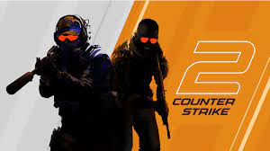
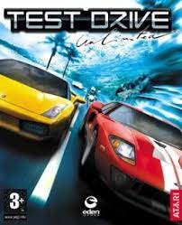

Random Games I Chose For Practice lol
Number #1

Grand Theft Auto V: Released On September 17, 2013
Grand Theft Auto V is a 2013 action adventure game developed by Rockstar North
And published by Rockstar Games. It is the seventh main entry in the Grand Theft Auto
series, following 2008's Grand Theft Auto IV. and the fifteenth instalment overrall. set within the fictional state of San Andreas, based on Southern California, the single-player story follows three protagonists retired bank robber Micheal De Santa, Street gangster Franklin Clinton, and drug dealer and gunrunner Trevor Philips, and their attempts to commit heists while under pressure from a corrupt government agency and powerful criminals. Players freely roam San Andreas's open world countryside and fictional city of Los Santos, Based on Los Angeles.
Number #2

Counter Strike Source 2: Released On September 27, 2023
Counter-Strike 2 is a 2023 multiplayer tactical first-person shooter game developed and published by Valve. It is the fifth main installment of the Counter-Strike series. Developed as an updated version of the previous main entry, Counter-Strike: Global Offensive (2012), it was announced on March 22, 2023, and was released on September 27, 2023, replacing Global Offensive on Steam.
Like its predecessor, the game pits two teams, the Counter-Terrorists and the Terrorists, against each other in various objective-based game modes. Additional game modes that stray away from this setup are also included. Counter-Strike 2 features major technical improvements over Global Offensive, including a move from the Source game engine to Source 2, improved graphics and new server architecture. In addition, many maps from Global Offensive were updated to use the features of Source 2, with some maps receiving complete overhauls.
Upon release, Counter-Strike 2 received generally favorable reviews from critics. In contrast, player reception was mixed; criticism was directed at the delisting of Global Offensive from Steam, degraded game performance, and the removal of several features that had been present in Global Offensive. As a result, Counter-Strike 2 received thousands of negative user reviews on Steam, leading to it becoming one of the lowest-rated Valve titles on the platform.
Number #3

Test Drive Unlimited: Released On September 5, 2006
Test Drive Unlimited is a 2006 racing video game developed by Eden Games and published by Atari for Xbox 360 and Microsoft Windows. Atari Melbourne House developed the PlayStation 2 and PlayStation Portable versions. Being the eighteenth entry in the Test Drive series, Unlimited serves as a reboot of the franchise, discarding the continuity of the previous games. The game features over 125 licensed sports cars and motorcycles and the terrain is modeled after the Hawaiian island of Oʻahu that features over 1,000 miles (1,600 km) of roads and highways.
It was soon followed by its sequel, Test Drive Unlimited 2 in 2011. A third game and soft reboot, Test Drive Unlimited Solar Crown, is currently under development (with KT Racing and Nacon replacing Eden Games and Atari, respectively), which will release in 2024.